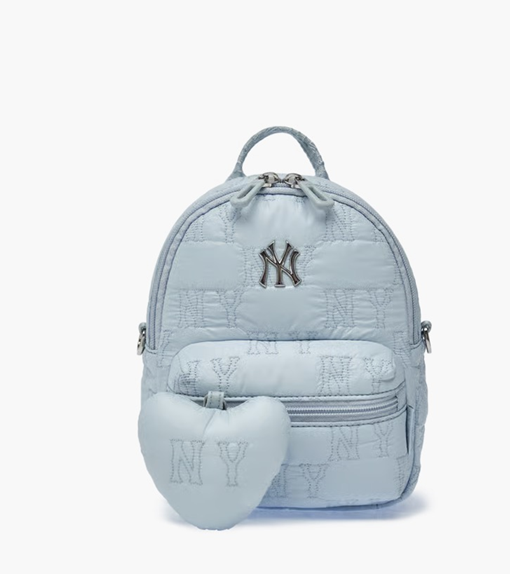
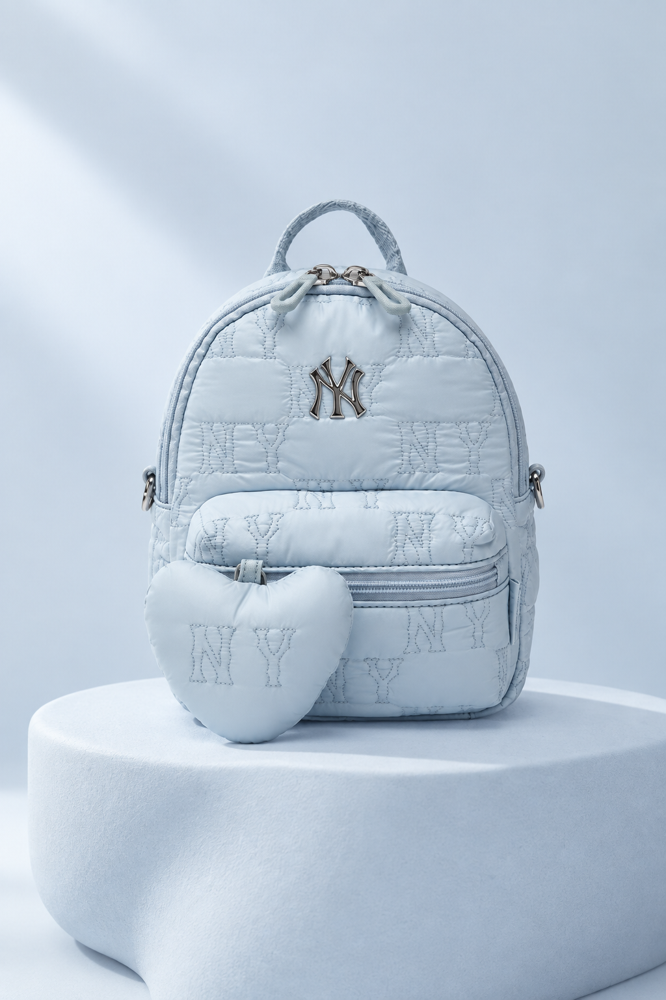
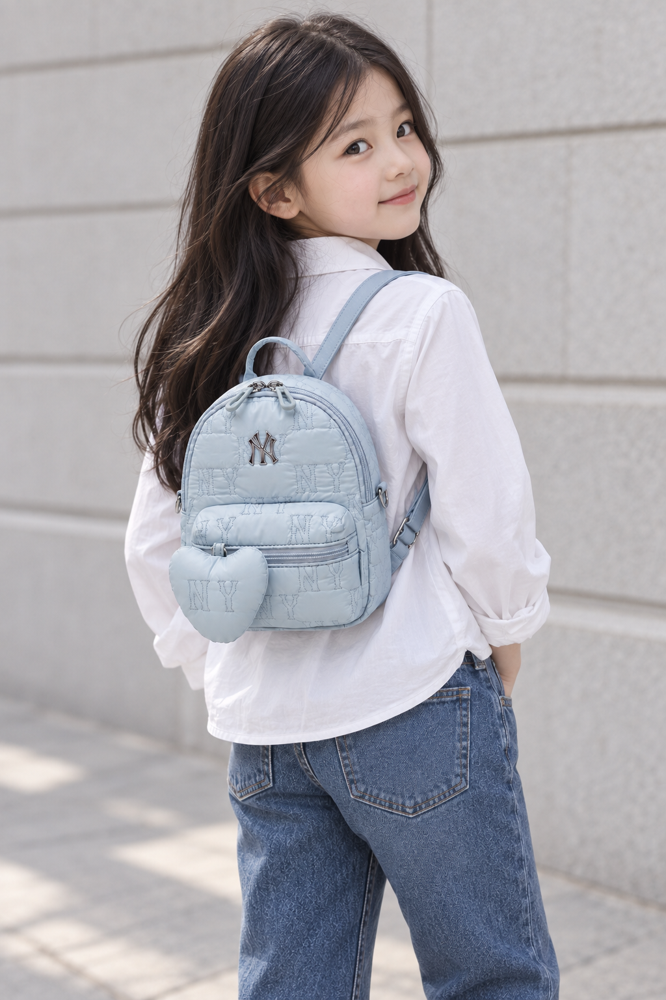
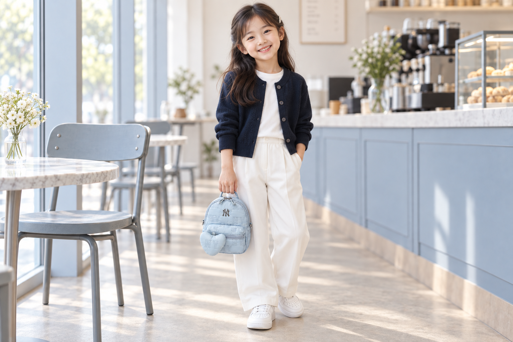

ควิลต์ลายโมโนแกรม NY
ลาย NY ซ้ำทั่วใบ พร้อมโลโก้ด้านหน้า
เติมรายละเอียดในโทนสีฟ้าเดียวกัน
THE LITTLE BLUE EDIT
กระเป๋าเป้มินิควิลต์ลายโมโนแกรม
สีฟ้าอ่อนละมุน พร้อมลาย NY และดีเทลรูปหัวใจ

SKY BLUEภาพด้านบนเป็นภาพสินค้าต้นฉบับที่ได้รับ
โทนสีอ่อนโยน รูปทรงโค้งมน
เติมลูกเล่นเล็ก ๆ ให้สไตล์ในทุกวัน

ลาย NY ซ้ำทั่วใบ พร้อมโลโก้ด้านหน้า
เติมรายละเอียดในโทนสีฟ้าเดียวกัน
ของตกแต่งรูปหัวใจเข้ากับตัวกระเป๋า
เพิ่มความน่ารักให้เป้ใบเล็ก
ภาพรายละเอียดเป็นภาพขยายจากภาพสินค้าที่ได้รับ
ตั้งแต่หูหิ้วด้านบนถึงกระเป๋าซิปด้านหน้า
ชมรูปทรงสินค้าได้จากภาพต้นฉบับ
เติมสีสันให้ชุดสบาย ๆ ในทุกวัน
ชมไอเดียการแต่งตัวกับนางแบบเด็กที่สร้างด้วย AI อายุประมาณ 7–9 ปี


โปรดตรวจสอบขนาดที่ระบุก่อนสั่งซื้อ
ภาพสินค้าด้านหน้า
SIZE F
ตัวเลขอ้างอิงจากตารางขนาดที่ได้รับ ต้นฉบับไม่ได้ระบุหน่วยวัด จึงต้องตรวจสอบก่อนนำไปจำหน่าย
ขนาดอาจแตกต่างตามตำแหน่งที่วัด โปรดอ้างอิงตัวเลขข้างต้นและภาพต้นฉบับ แทนภาพจัดฉากด้วย AI
ภาพแต่งตัวและภาพจัดฉากที่สร้างด้วย AI ใช้เป็นไอเดียประกอบการแต่งตัวเท่านั้น สี โลโก้ สัดส่วน และรายละเอียดอุปกรณ์อาจแตกต่างจากสินค้าจริง โปรดใช้ภาพต้นฉบับที่ได้รับและข้อมูลสินค้าเป็นหลักในการพิจารณา
สีที่เห็นอาจแตกต่างตามหน้าจอและสภาพแสง
แหล่งข้อมูลเพิ่มเติมสำหรับชื่อสินค้า ประเภท และวัสดุ: ข้อมูลสินค้าอย่างเป็นทางการของ MLB สำหรับรหัสรุ่นเดียวกัน
โปรดตรวจสอบราคา การจัดส่ง และเงื่อนไขการเปลี่ยนหรือคืนสินค้าจากผู้จำหน่าย